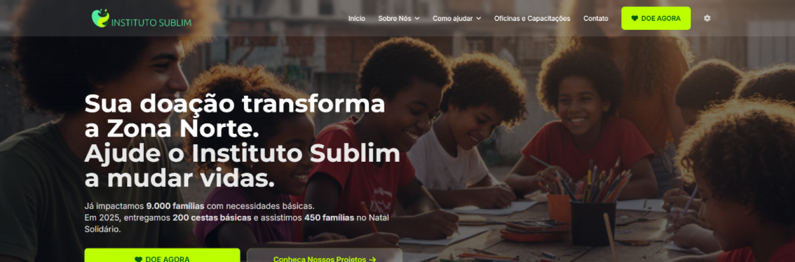
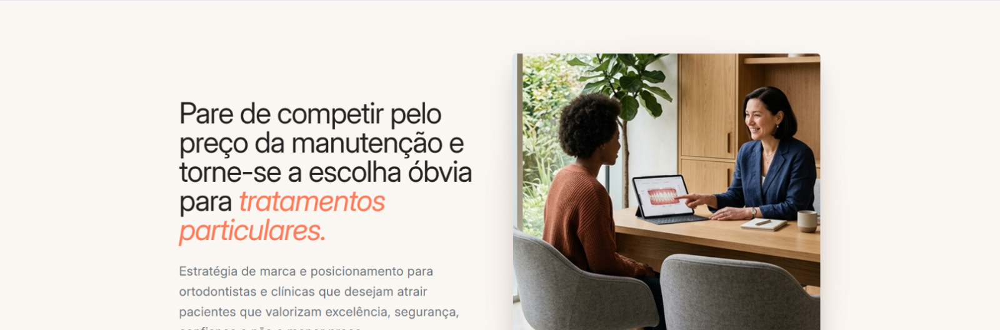
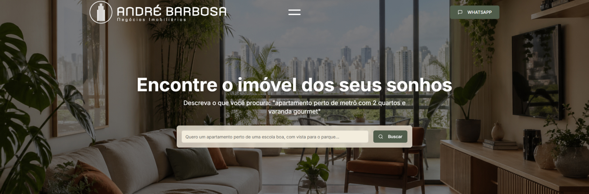
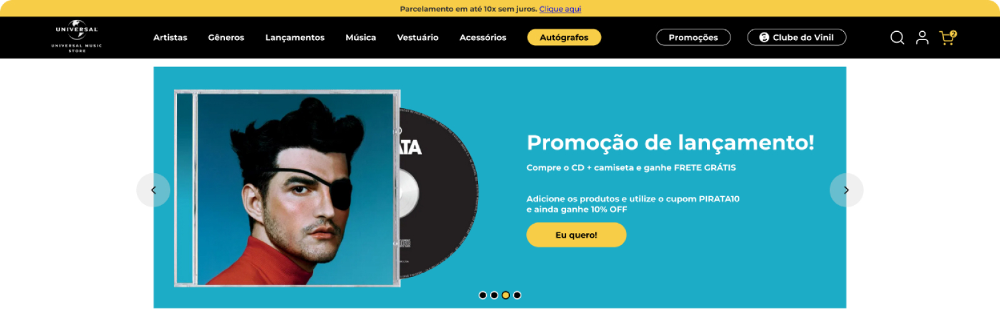

Landing Pages
Páginas focadas em geração de leads, qualificação de demanda e conversão para ofertas específicas.
UX/UI Design · React
Sites institucionais e landing pages com estratégia de UX, UI e desenvolvimento em React para comunicar melhor sua marca e gerar mais contatos.
Para empresas e profissionais que precisam vender melhor uma oferta digital sem separar estratégia, design e implementação.
Credibilidade
A página certa não é apenas bonita. Ela organiza a proposta de valor, remove ruído da decisão e conduz o visitante até uma conversa comercial mais qualificada.
A atuação combina diagnóstico, arquitetura da informação, UX/UI Design e desenvolvimento front-end. Menos repasse entre especialistas, mais coerência entre estratégia, tela e código.
O diferencial
Entendimento do negócio, oferta, público e gargalos de conversão.
Mapa da página, narrativa e priorização do que precisa ser dito.
Interface, ritmo visual, componentes e adaptação responsiva.
Implementação front-end com atenção a performance e manutenção.
Ajustes finais, publicação orientada e acompanhamento inicial.
Serviços
Páginas focadas em geração de leads, qualificação de demanda e conversão para ofertas específicas.
Presença digital profissional, escalável e preparada para comunicar autoridade com clareza.
Sites rápidos, modernos e objetivos, desenvolvidos para apresentar sua marca com clareza, destacar sua oferta e conduzir o visitante à ação.
Projetos em destaque




Como trabalho
Mapeio oferta, público, objeções e o que precisa acontecer para o visitante virar contato.
Organizo a narrativa, as seções e a ordem das decisões que a página precisa conduzir.
Crio uma direção visual refinada, responsiva e coerente com o posicionamento da marca.
Transformo a interface em front-end com componentes, estados e base pronta para manutenção.
Fecho ajustes, preparo o handoff/publicação e acompanho os primeiros refinamentos da página.
Depoimentos
"Eu esperava algo bonito, mas o que o Robson entregou foi muito além disso."
"O Robson não só traduziu visualmente o que eu queria, como me ajudou a organizar minha proposta de valor."
"Desde o diagnóstico inicial, o foco foi entender onde minha marca estava perdendo valor."
Conversão
Vamos conversar sobre sua landing page, site institucional ou produto digital.